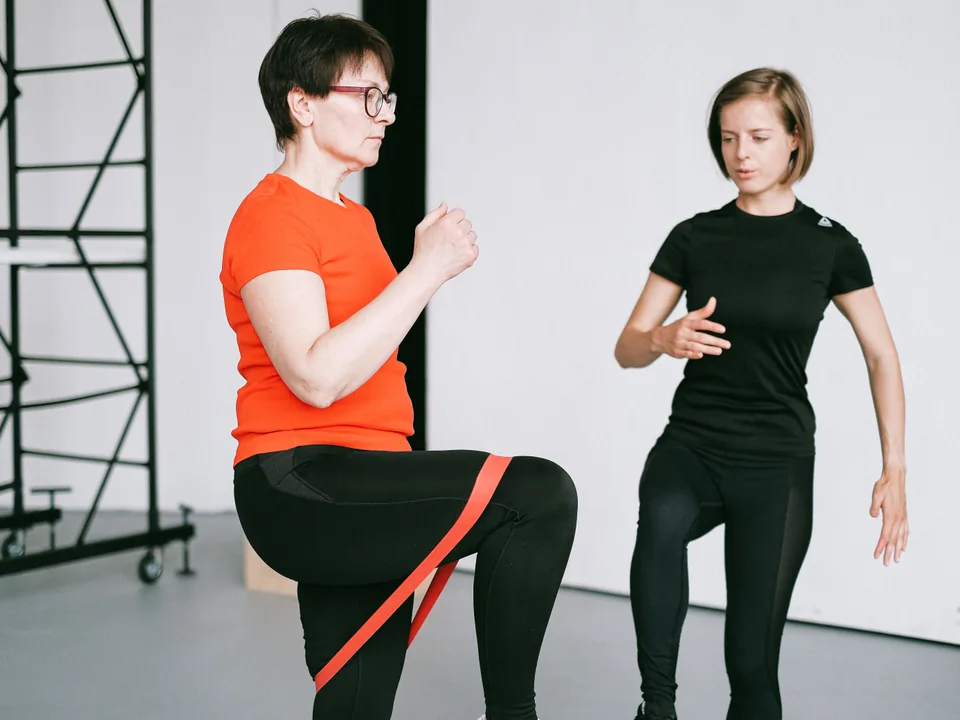

Força & condicionamentoPersonal
Trainer
Treino que acompanha você.Fortalecimento e condicionamento com um treino pensado para seus objetivos. Orientação próxima na execução dos exercícios, com atenção ao seu ritmo e à sua evolução.
Nas academias de Palmital/SP